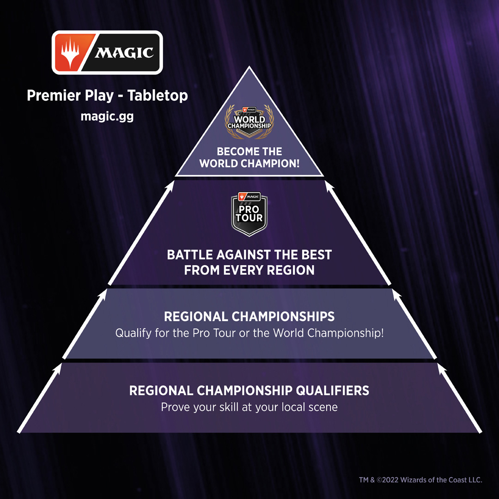

The Road to Qualifying for the Magic: The Gathering Pro Tour
Qualifying for the Magic: The Gathering Pro Tour is a challenging journey that requires dedication, skill, and a deep understanding of the game. Whether you're just starting out or a seasoned player, this guide will help you navigate the path to becoming a Pro Tour competitor.
Steps to Qualify
- Start Competing Locally
- Attend Regional Championship Qualifiers (RCQs)
- Earn Points and Prizes
- Qualify for the Regional Championship
- Top Finishers Advance to the Pro Tour
For more information on how to qualify, visit the official Magic: The Gathering Pro Tour page.
The journey to the Pro Tour isn’t easy, but it’s definitely worth it. The thrill of competition and the chance to be among the best is what drives many players to excel.